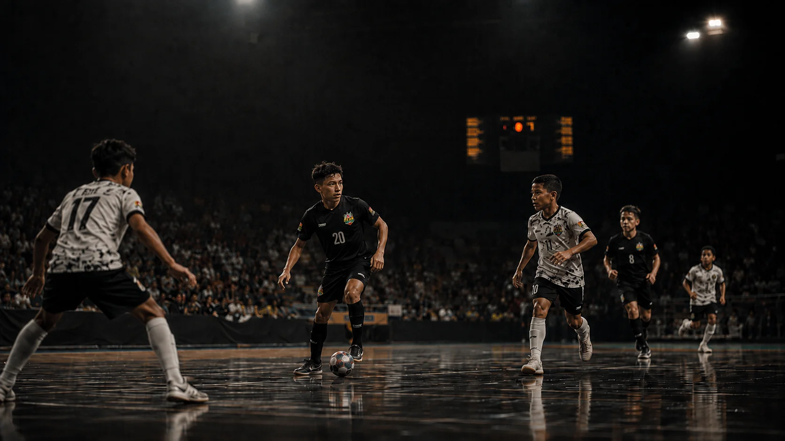

TEMPORADA
Acompanhe a agenda e os resultados do Time 1, do Time 2 e da ACAP Academy — tudo num só lugar, atualizado conforme a tabela da Federação.
Assim que a Federação divulgar o calendário da temporada, os próximos jogos do Time 1, do Time 2 e da ACAP Academy aparecem aqui.
Acompanhar no InstagramOs resultados do Time 1, do Time 2 e da ACAP Academy vão aparecer aqui conforme os jogos acontecem.